프리뷰에서 전체 구성 찾기
큰 프리뷰의 총액을 선택하면, 계산·상태·검증·표시를 담당하는 구성이 같은 화면에 드러납니다.
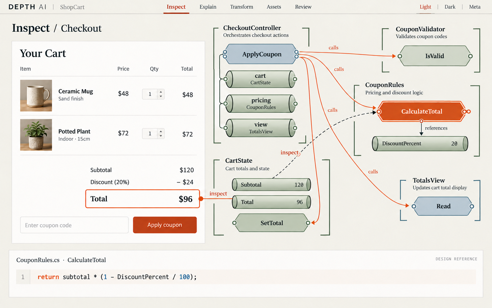
장면 검토 메모
총액에서 코드로 이어지는 시선 흐름. 상단 ShopCart는 생성 과정에 남은 예시명이며 실제 샘플명은 Checkout이다. inspect 안내선과 실제 호출선을 구현에서 별도 레이어로 구분한다.
이미지·텍스트의 연결 근거
이미지와 텍스트를 각각 선택해 에셋 파일과 프리뷰 선언, 연결된 코드를 구분해서 봅니다.
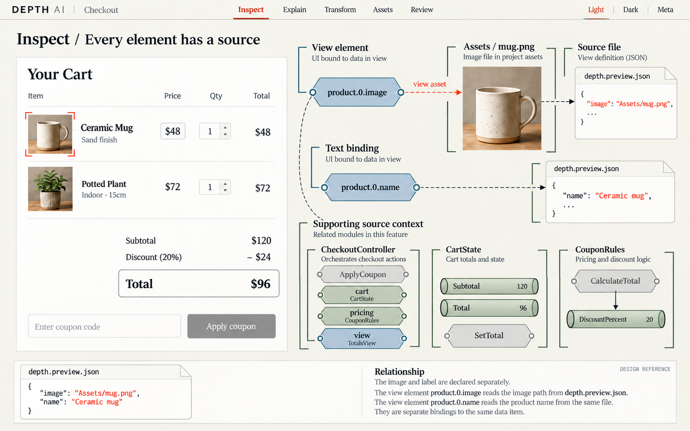
장면 검토 메모
이미지와 텍스트의 별도 선언을 보여준다. 흐린 보조 버튼은 비활성 기능을 뜻하지 않으며 실제 구현에서는 읽을 수 있는 대비와 클릭 가능성을 유지한다.
다크 모드의 동일한 구조
라이트 모드와 같은 위치·형태를 유지하면서 어두운 바탕에서도 선택과 글자를 읽게 합니다.
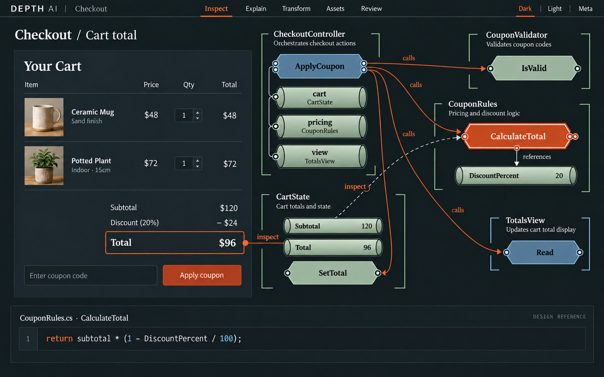
장면 검토 메모
01과 같은 구조의 다크 테마. 밝은 모듈 위 글자를 어둡게 교정했다. PNG 전체의 WCAG 충족이나 실제 EXE 렌더링을 검증한 결과는 아니다.
프로젝트 전체를 읽는 모듈 지도
프로젝트를 파일 목록으로만 보지 않고, 소속과 공유 관계를 가진 모듈 지도로 펼칩니다.
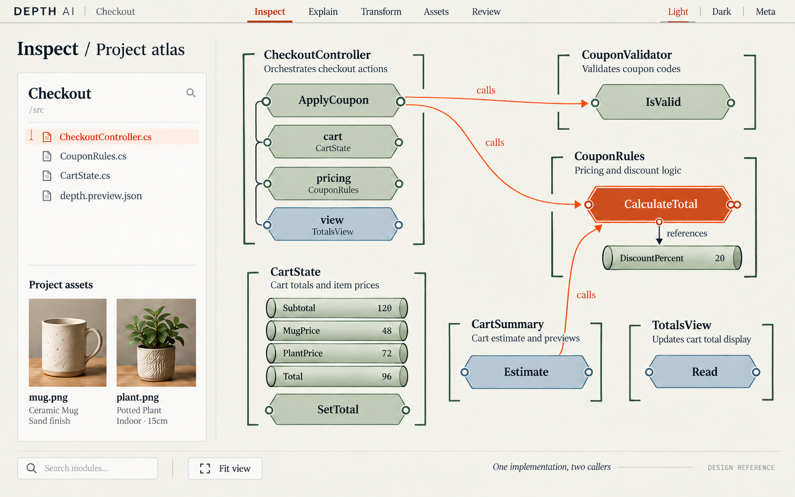
장면 검토 메모
클래스 소속과 두 호출자의 공유 계산을 보여준다. 선택 관련 호출을 강조한 시안이며 전체 관계 수나 누락 없는 API 그래프의 증거는 아니다.
모듈 내부와 소스 계약
한 모듈의 선언·입출력·사용처와 소스를 함께 읽습니다. 클래스 경계가 내부 구성을 묶습니다.
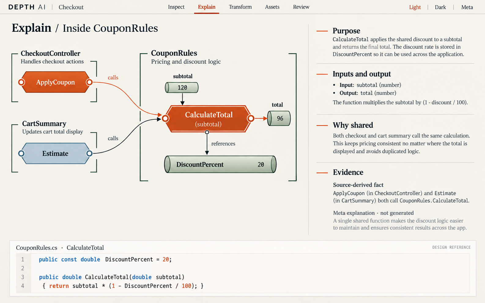
장면 검토 메모
CouponRules의 두 선언과 공유 이유. 입력120/출력96은 계산 예시다. CartSummary의 설명은 실제로 Estimate 계산을 제공한다는 뜻이며 UI 갱신 메서드로 구현하지 않는다. Meta 미생성 아래 설명은 예시 원고다.
초보자용 FIFO 설명
작업이 들어오고 나가는 순서를 그림으로 설명하고, FIFO를 택한 이유와 한계를 소스에 연결합니다.
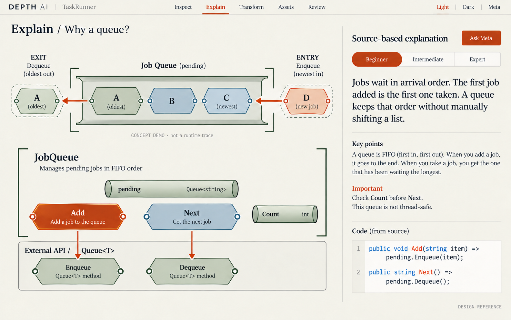
장면 검토 메모
FIFO 방향과 외부 Queue<T> API 경계를 교정했다. A의 이중 표시는 나가기 전후의 개념 예시이며 동시 큐 상태나 실행 추적이 아니다.
숙련자·AI용 계약과 코멘트
같은 모듈을 간결한 계약·조건·참조와 코멘트 초안으로 읽습니다. 설명 수준을 전환합니다.
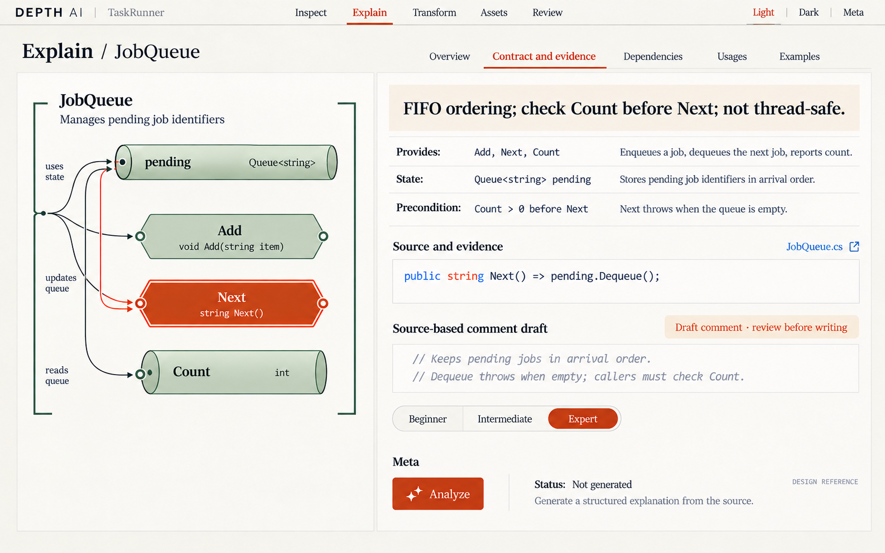
장면 검토 메모
Count를 프로퍼티로 교정하고 실제 Next 발췌를 사용했다. 왼쪽 소속 안내선은 실제 호출선으로 사용하지 않는다. 실제 참조 방향은 Add/Next/Count → pending이다.
방향·가중치·변경 영향
호출 방향, 참조, 가중치와 행렬 발췌를 함께 보며 변경이 닿는 곳을 추적합니다.
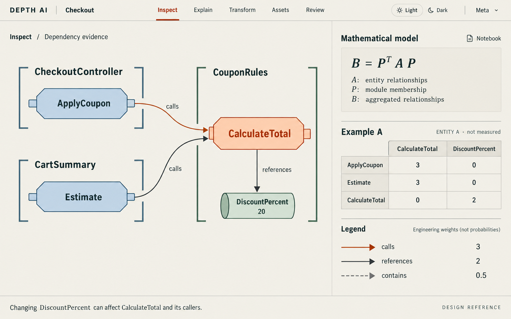
장면 검토 메모
실제 두 호출과 할인율 참조를 네 노드로 한정했다. 표는 A의 행·열 발췌 예시이며 정사각 전체 인접행렬이나 실제 서비스의 B 결과가 아니다.
실제 파일 분리 제안
추상적인 노드 이동에 그치지 않고, 원본 파일과 분리할 실제 목적지·유지할 계약을 비교합니다.
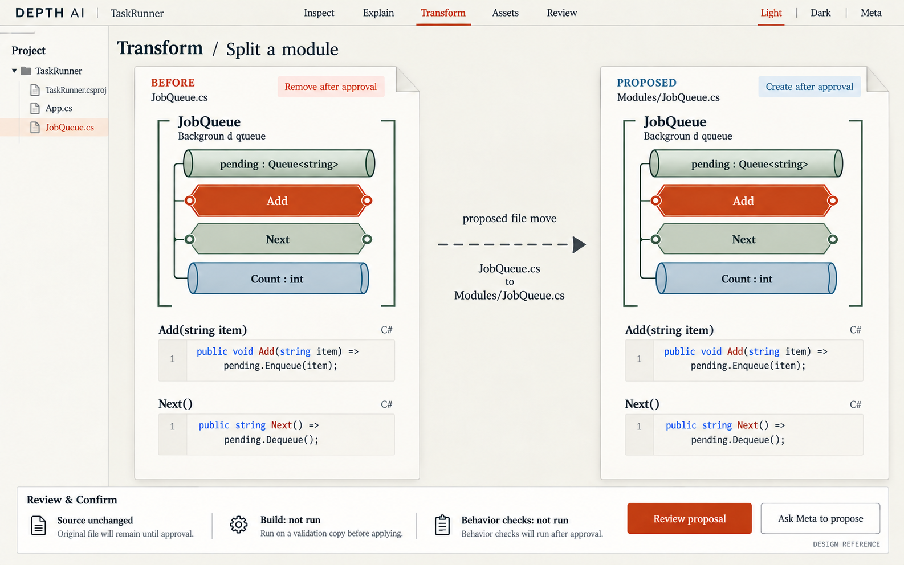
장면 검토 메모
JobQueue.cs → Modules/JobQueue.cs는 파일 분리 제안 예시다. 실제 Add/Next 타입을 string으로 교정했다. 작은 'Background d queue' 생성 오탈자는 구현에서 'Pending jobs'로 고친다. 검증은 적용 전 복사본에서 실행한다.
두 프로젝트의 모듈 통합
서로 다른 프로젝트의 모듈을 대조하고, 가져올 파일·연결할 계약·검토할 충돌을 보여줍니다.
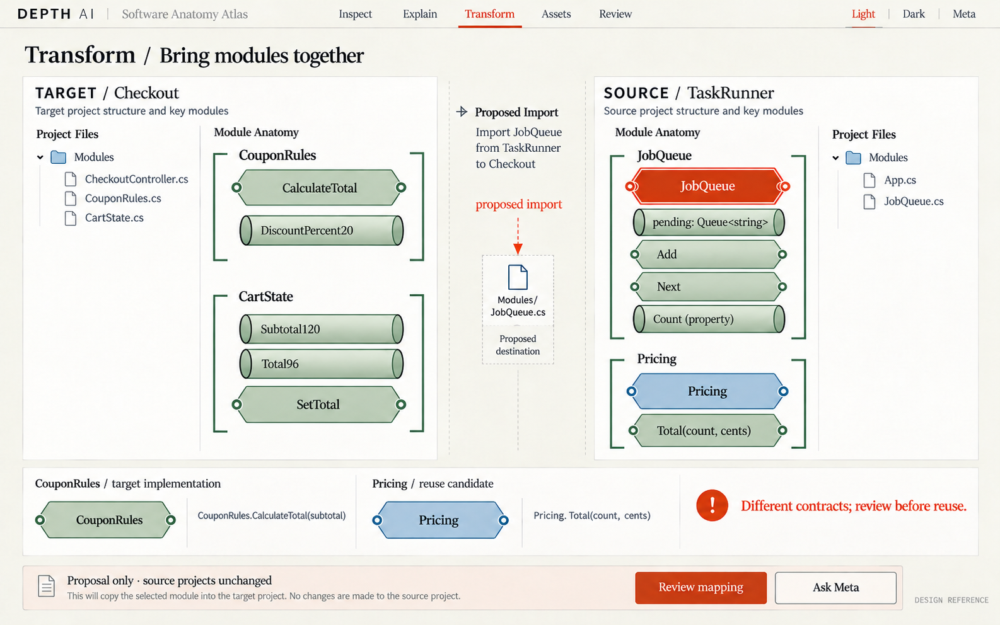
장면 검토 메모
Checkout과 TaskRunner의 파일/계약을 대조한 통합 시안. 방법명과 상태 몸체를 교정했다. JobQueue/Pricing 대표 선택 표식은 클래스의 새 메서드를 의미하지 않는다. 제안 화살표의 시작점 연결은 실제 UI에서 소스 ID에 고정한다.
Meta 이미지 제작과 사용처
생성할 이미지를 크게 보고 실제 사용처로 연결하는 흐름입니다. 3D 메시 옵션은 미연결 목표입니다.
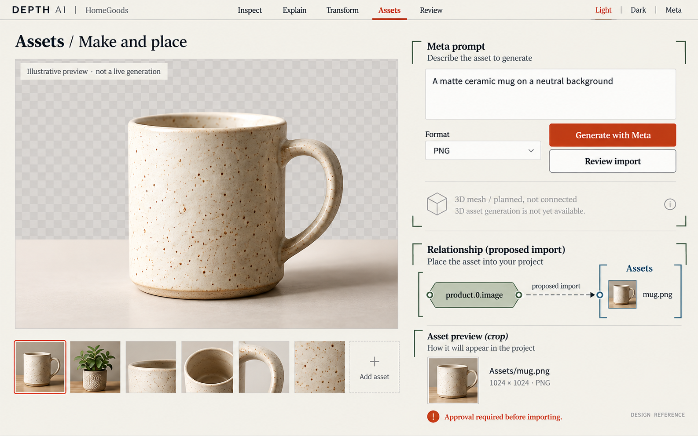
장면 검토 메모
Meta 이미지 작업 흐름의 디자인 예시이며 머그 사진은 이번 이미지 생성기로 만든 삽화다. 실제 Meta 결과가 아니다. HomeGoods는 예시명이고 3D 메시 옵션은 미연결 목표로 표시한다.
변경 검토·검증·되돌리기
소스 변경과 예상 결과를 나란히 검토합니다. 검증 상태·승인·이력·되돌리기를 구분합니다.
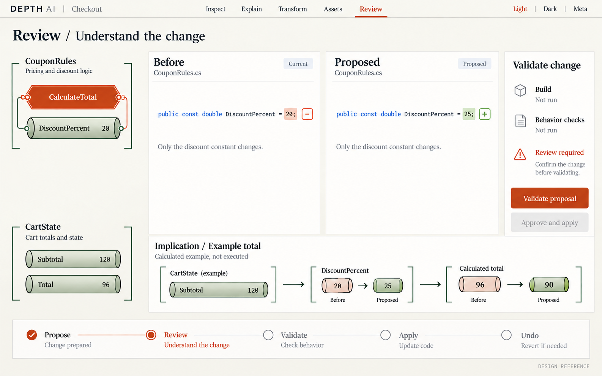
장면 검토 메모
상수20→25와 예시총액96→90을 분리했다. 계산 예시는 실제 실행/빌드 결과가 아니다. 주황 검사 안내선은 소스 의존 방향과 별도 레이어로 표시한다.
논문이 알려주는 것과, 이번 설계가 제안하는 것
시각적 주의에 관한 저자 해설을 바탕으로 선택 강조를 제한했습니다. 그래프 가독성 연구를 참고해 관계를 따라가는 연속성과 교차를 고려했습니다. 정보 시각화의 작업 분류를 참고해 전체 맥락과 상세 읽기를 함께 두었습니다.
이 자료들이 Depth AI의 새 배치가 가장 좋다는 것을 입증하지는 않습니다. 탐색 시간·이해도·대비·접근성은 실제 구현과 사용자 비교로 검증해야 합니다. 회색조 보기는 색 이외의 단서를 비교하는 보조 기능입니다. 읽은 범위와 적용 한계 보기 →